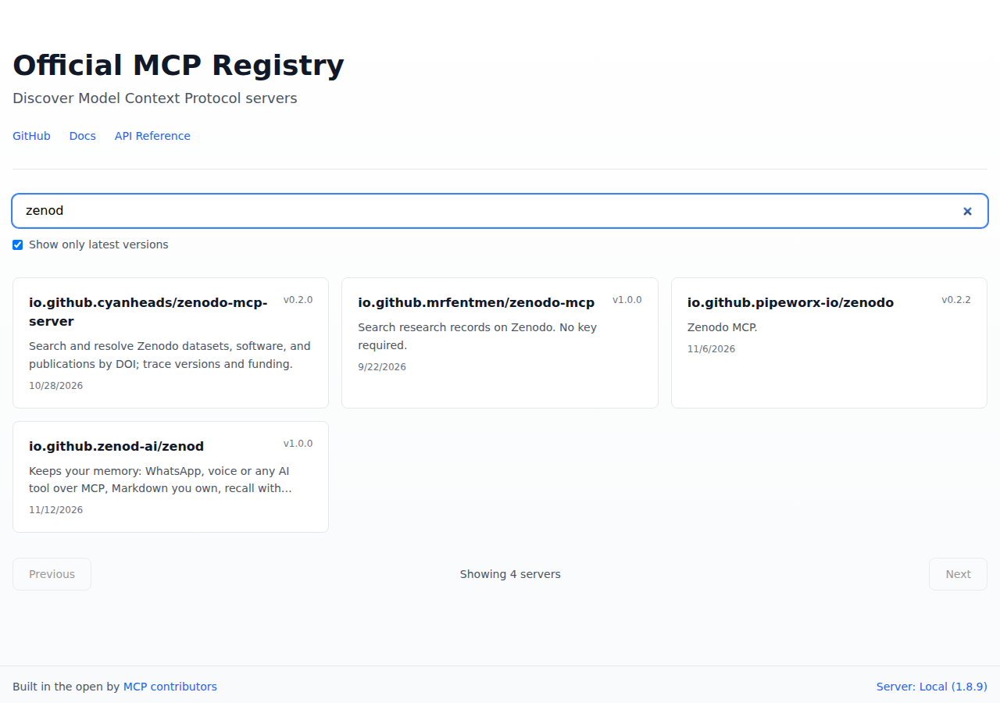
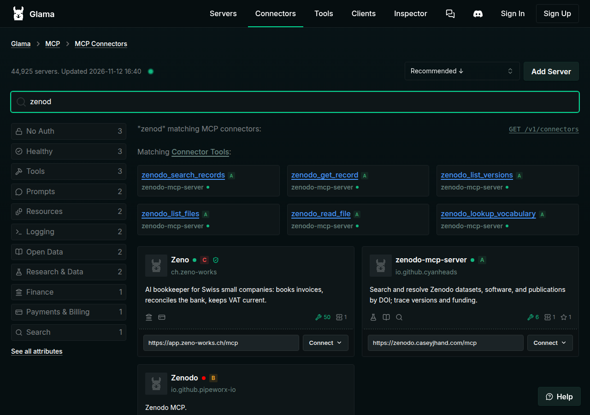

EPIC-10 · Zenod in every MCP directory · iteration 2 · 12 November 2026
Iteration 2: Zenod has a new name in the MCP Registry, and the backwards address is gone from every listing except one old Glama page that Glama has been asked to delete.
Before: the official MCP Registry listed Zenod under zenod.dev written backwards, and Glama copied it into its pages.
Now: the registry lists Zenod as io.github.zenod-ai/zenod, title Zenod, website zenod.dev. The old entry is deleted. Glama hid its old page from search, and we asked Glama to delete it. Nothing was kept.
Guard: our build now fails if the backwards form appears in anything people read.
Where it came from
On 2 November an agent (the EPIC-10 planning worker) chose the registry name when it wrote the directory plan. The registry lets you prove you own a website. If you do, it writes your name with the address turned around, so zenod.dev became "dev" then "zenod". The agent picked that option because it looked like our own domain and because the registry only searches names, so the word "memory" in it would help people find us. The other option, a name tied to our GitHub, was written down only as a fallback.
On 7 November a second agent published it, with your yes to publishing in the free directories (E10-A1). That question asked about publishing and the wording. It never showed you the name itself or how it would look on a listing. Nobody checked how a person would read it. Glama then copied the name into its web addresses and its "by" line, so it looked like a wrong address for Zenod.
Iteration 1 this afternoon changed the words around the name and wrongly kept the name. This iteration removes it.
What changed today
We moved Zenod to the registry's other kind of name, the one tied to our GitHub organisation. Our own GitHub build proves we own it, so it needs no reversed address. Then we set every version of the old entry to deleted. That hides it from the registry and tells every directory that copies the registry to drop it.
Every place, before and after
| Where | Before | After | Checked live |
|---|---|---|---|
| Official MCP Registry | Zenod listed under zenod.dev written backwards, three versions | Listed as io.github.zenod-ai/zenod, title Zenod, website zenod.dev. All three old versions set to deleted and gone from the registry | 16:28Z |
| Glama search for zenod | showed Zenod under zenod.dev written backwards | the old page no longer appears in Glama search | 16:42Z |
| Glama old connector page | title and address used zenod.dev written backwards | marked deprecated with the note "Zenod has moved" and a pointer to zenod.dev. Removal requested 12 November 2026, Glama support case GLM-38: delete the page and its addresses | 16:40Z |
| Glama page for our GitHub repo | linked to the old connector page | Removal requested 12 November 2026 in the same case GLM-38: link the new connector instead | 16:42Z |
| Glama new connector | did not exist | Glama copies new registry entries on its own. Not there yet at 16:42Z. The next listing check confirms it | 16:42Z |
| mcp.so submission | its registry line named zenod.dev written backwards | says listed as Zenod, io.github.zenod-ai/zenod, website zenod.dev | 16:25Z |
| awesome-mcp-servers request | its registry line named zenod.dev written backwards | says listed as Zenod, io.github.zenod-ai/zenod | 16:25Z |
| Our four GitHub pull requests about the listing | titles or text named zenod.dev written backwards | reworded | 16:31Z |
| Our public GitHub repo, every file | about 70 lines in the plan, cards, evidence notes, a test, a server label and the publish step | zero. 28 old screenshots that showed it were removed | 16:28Z |
| Our team's plan pages (spines) | seven lines still name zenod.dev written backwards | Handed to the Delivery Manager today to reword. Only he writes those lines | 16:45Z |
| zenod.dev, zenod.dev/connect, cloud.zenod.dev | already clean | checked, none | 16:21Z |
| GitHub repo About box, the Gemini extension repo | already clean | checked, none | 16:21Z |
| PulseMCP, mcp.so site, MCP Market, Smithery, GitHub's MCP list | Zenod not listed there | checked, nothing to remove | 16:30Z |
| Social team files and unsent posts | a listing table and a registry screenshot with zenod.dev written backwards | Handed to the social team today to reword and retire the screenshot. Tonight's post already says Zenod and zenod.dev | 16:24Z |
| Our DNS record note at Cloudflare | named zenod.dev written backwards | renamed | 16:29Z |
| A label inside the Phylax server image | named zenod.dev written backwards | renamed in the code. The next image build carries the new label | 16:28Z |
Glama is the only directory that copied the old name. Its own setting can only deprecate a page, which hides it from search but leaves it reachable by its old address, so we asked Glama's team to delete it.
Two things cannot be edited by anyone: old git commits in our public repo, and GitHub's "edited" history on the issue and pull requests. Changing past commits would mean rewriting the shared history of the repo, which we do not do. No page or listing shows the old text.
What you see now
Official MCP Registry, search "zenod": Zenod appears as io.github.zenod-ai/zenod, and the old entry is gone.

Glama search for zenod: the old page is gone from results.

The guard
A check now runs first in every build of the Zenod repo and before every registry publish. It fails if zenod.dev written backwards shows up in the listing file, the website, cards, evidence pages, code or tests. The registry publish also refuses a listing whose title is not Zenod or whose website is not https://zenod.dev.
EPIC-10 row E10-S1, iteration 2. Registry change: pull request 1648, published 16:27Z, old name deleted 16:28Z.